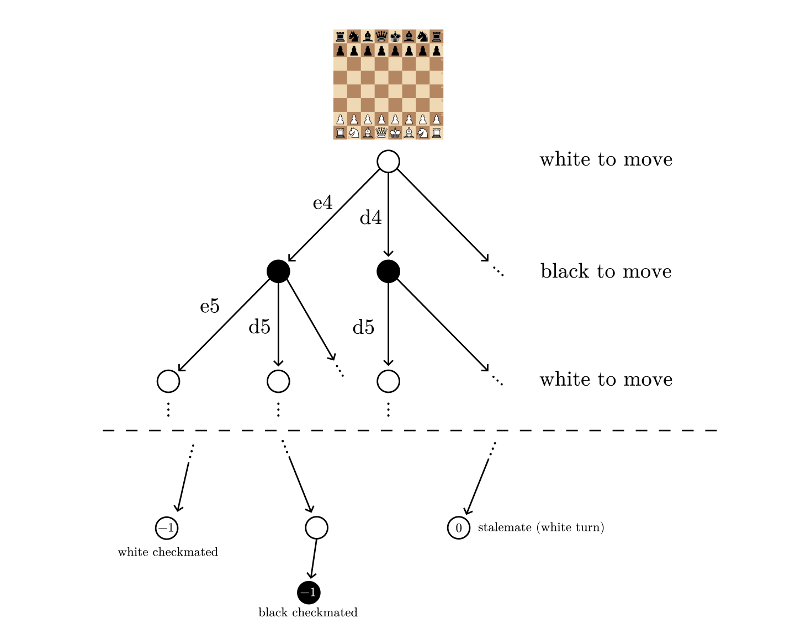
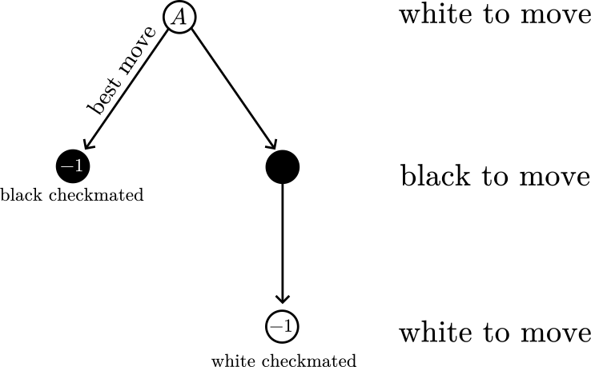
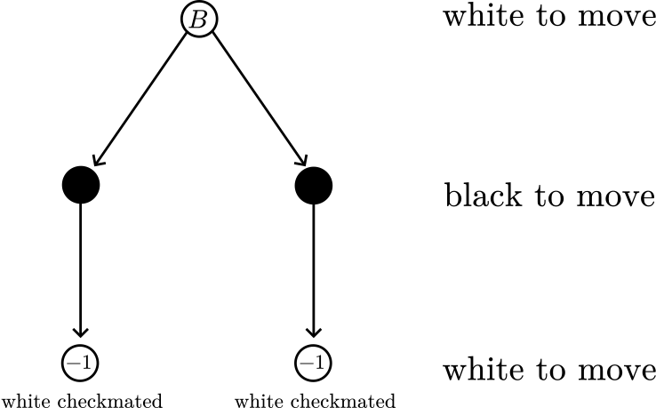
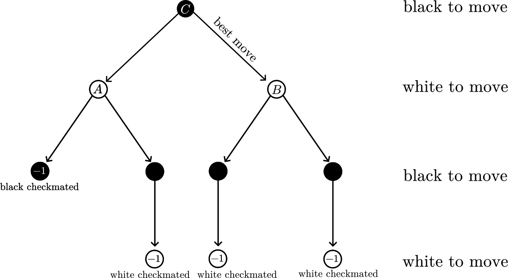
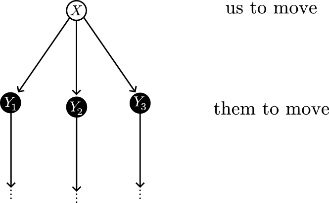
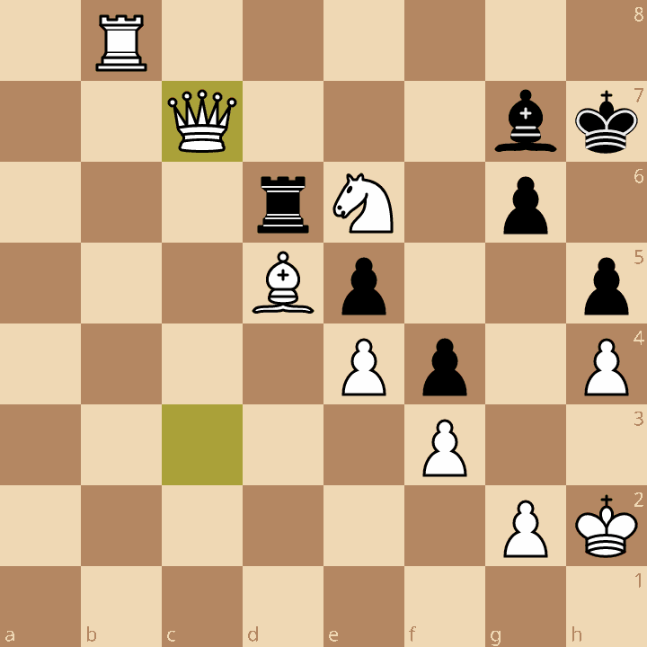
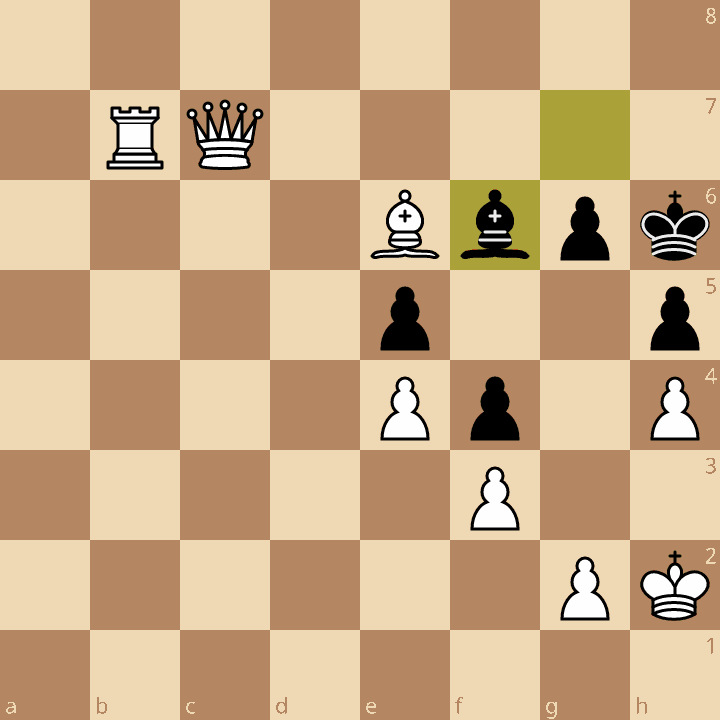
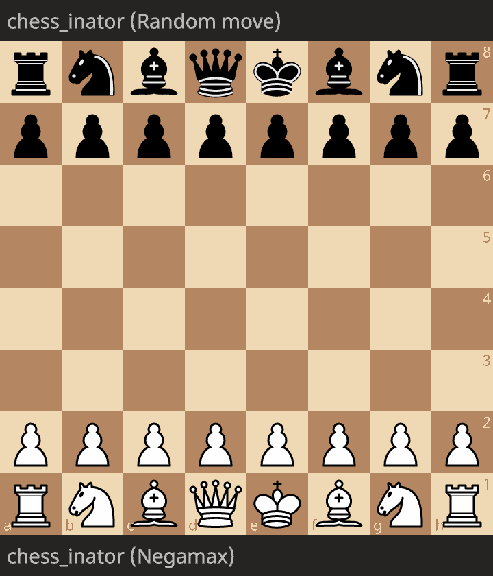

Chess engine, pt. 2: Negamax search
This post is part of a series about building a chess-playing engine.
In the last post, I covered the UCI protocol, and move generation. Implementing these, it’s possible to create a chess “playing” engine that plays random legal moves. Though it does play chess, this engine is very bad, and it loses rapidly against players with any skill.
So, how do we make our program actually play chess? The classic answer is to use the minmax algorithm, but in my engine specifically, I use negamax, a common variation of minmax.
Negamax is the core of many modern chess engines, so in this post, I’ll attempt to explain the algorithm in a way that builds strong intuition and understanding for how it works.
The negamax algorithm
Negamax is an algorithm that finds the best move to play in any chess position. In other words, it is the brain of the chess engine, and it is what lets it play good chess.
What is the “best move” in chess, though? Our engine’s ultimate goal while playing chess is to win, or failing that, get a draw.
Scoring outcomes
Let’s now specifically define what the outcomes “win, lose, draw” mean.
- We lose when it is our turn and we are are in checkmate.
- We win when our opponent loses.
- A draw is when the fifty-move rule or threefold repetition rule are invoked, or there is a stalemate.
For our purposes, there are no other outcomes to the chess game.
Notice how I don’t mention White or Black at all above. Usually, chess engine think in terms of Us versus Them. “We” are the player to move, which can be either Black or White.
Also, the outcome of a game depends on your perspective.
If we win, they lose, and vice versa.
The specific terminology is that chess is a zero-sum game.
First, we assign numerical scores to win (1), draw (0) and loss (-1).
These scores are positive when the outcome is good, and negative if the outcome is bad.
Then, the scores for both players literally sum to zero:
our score + their score = 0
W + L = 1 + -1 = 0
L + W = -1 + 1 = 0
D + D = 0 + 0 = 0
By doing some algebra on this formula, we find out that
our score = -(their score).
In other words, we can negate a player’s score to get the other player’s score. This will be important later, and is the “nega” of negamax.
The game tree
We may imagine the game of chess as a tree structure, like this:

This picture represents all possible games of chess that can be played. The nodes (the circles) represent positions, and the edges (the arrows between circles) represent moves, which bring the game from one position to another.
The starting position is the node at the very top of the tree, and all possible games branch out from it.
The leaves (the nodes at the bottom) of the tree, each represent the end of a game of chess. There are practically infinite leaf nodes, but I only drew three of them.
In the leaf nodes, I also wrote the score of the game, from the perspective of the side whose turn it is.
Notice how there are no 1 scores,
since games can only end in either draw, or checkmate (which is a loss for the current player).
Trivial cases
Recall that the goal of the engine is to find the best move in each position. Let’s now examine some simple situations to see what engine should do in each case. From these examples, we’ll be able to build an algorithm that works generally in all situations.
First, say we’re White, and we have to choose between two moves in the diagram below:
- the move on the left, which delivers checkmate (i.e. we win);
- the move on the right, which lets Black checkmate us (i.e. we lose).
Let’s call this position A.

What’s the best move?
Of course, the move on the left that makes us win, and not the one that makes us lose.
Then, practically speaking, if we get to position A, that is a guaranteed win for White.
Next, say we’re White, and we have two moves to choose from. Both moves let Black checkmate us.
Let’s call this position B.

In this situation, both moves are the best,
since they both have the same outcome (i.e. we lose).
Therefore, if we get to position B, White is guaranteed to lose.
More complex cases
So far, the positions we’ve looked at have been pretty simple. Let’s invent a more complicated position.
Say we’re Black, and we have the choice between two moves:
- one leads to position
A(a guaranteed win for White); - one leads to position
B(a guaranteed loss for White).
Let’s call this position C.

Now, what is our best move?
Earlier, we saw that for White, A is a win, and B is a loss.
But for Black, it’s the opposite: A is a loss, and B is a win.
Because of that, Black’s best move is the one that goes to B.
Therefore, if we get to position C, Black is guaranteed to win.
Eventually, we have the general case.
Say we have the position X, where we have to choose between multiple moves,
and they lead to positions Y1, Y2, and so on.

What is the best move?
The best move is the one that leads to the position with the best outcome for us (i.e., the best outcome for the player to move).
For example, if the position Y1 is a guaranteed win for us, we pick the move that leads to Y1.
If there is no next position that is a guaranteed win,
we pick the guaranteed draw.
Now, how do we know the outcome of the Y positions?
Using a similar process for determining that position C above was a win for Black,
we can build the game tree up to determine the outcome of any position in chess,
including the Y positions.
The actual algorithm
Let’s now build concrete code (in pseudo-Python) for negamax, based on the above method for finding the best move.
The negamax function can be called on a node,
and it will return both the best move for us (the player to move),
and the numerical evaluation (i.e. the guaranteed outcome) for the position.
The notable difference between this code and the examples above is that this algorithm starts from a position, and thinks a few moves ahead, while in the examples we started from the end of the game, and worked backwards. (I think working backwards is easier to understand, as it’s more obvious why the best moves are the best.)
def negamax(position) -> (Move, int):
"""Return the best move and evaluation of a chess position."""
if position.is_checkmate():
return None, -1
else if position.is_drawn():
return None, 0
possible_moves = generate_moves(position)
best_score = -infinity
best_move = None
for each move in possible_moves:
# note: in real code, consider using make/unmake instead
updated_position = apply_move_to_position(position, move)
opponent_move, opponent_score = negamax(updated_position)
our_score = -opponent_score
if our_score > best_score:
best_score = our_score
best_move = move
return best_move, best_score
Here are the rough steps of the code:
- Look at all the moves we can make.
- Find the outcome of each resulting position by recursively calling the negamax function.
- This outcome is from their perspective, so negate it to get the score from our perspective.
- Pick the move that resulted in the best score.
- The best score is the guaranteed outcome of this position.
Optimal play
With just these lines of code, we’ve (technically) solved the game of chess.
Why?
All games of chess are finite because of the fifty-move rule,
so the function must terminate in finite time.
We can therefore call our negamax function on the starting position,
and it must tell us that either:
- White has a guaranteed win;
- Black has a guaranteed win; or
- White has a guaranteed draw.
Not only that, it will also tell us the best opening move for White.
The consequence of this is that if two geniuses played chess optimally, the outcome would be the same every time. Therefore, as Claude Shannon wrote in 1949, if such “mental giants” were to start a game, one of them would immediately resign, or they would agree to a draw.
In this (unfortunately fake) video, grandmaster Maxime Vachier-Lagrave shows that in this scenario, the starting position in chess simply becomes a chess puzzle.
Now, we know that in real life, no human chess player can play optimally. In fact, not even chess engines play at the level of our negamax algorithm. Theoretically, this code would play perfect chess. But practically, it would take forever to run.
If we use really generous numbers, let’s pretend that in any chess position there are two legal moves, and that there are invariably 80 half-moves in a chess game. Also pretend that the above algorithm requires one picosecond to analyze one unique game.
Then in that case, it would take 1e-12 * 2**80 seconds, which is around 38000 years to run.
Of course, this is infeasible, so we must take some shortcuts with our algorithm.
A heuristic approach
The main issue with using the theoretical negamax algorithm is that as it looks more and more moves deeper down the game tree, it takes exponentially more time to run. An obvious way to make the algorithm practically useful is to limit the depth of recursion. That is, instead of examining the entire game tree down to the leaves, only examine a few layers of it.
Once we recurse up to a limit of n times,
we’ll stop recursing.
Then, negamax will guess the outcome (1, 0, -1) of a position,
instead of properly calculating it.
The disadvantage is that we’re no longer guaranteed the outcome,
but now our negamax will run in a practical timeframe.
The evaluation function is the part that does this guessing.
A chess engine’s evaluation function takes a chess position, and returns a numerical score for it.
Traditionally, this score will be a single number.
A bigger (positive) number means the position is probably a 1,
while a lower (negative) number means the position is probably -1.
In this heuristic approach, we are replacing the theoretical scores 1, 0, -1 by the score given by the evaluation function.
If our evaluation function is accurate at guessing the outcome of a game,
negamax will find moves leading to positions with higher score, thus positions where the engine will probably win the game.
Material counting
Now, how do we make an evaluation function? How do we guess the outcome of a chess game?
It turns out that most chess players already have a decent sense of how to evaluate a position. Take a look at this position. Who do you think will win?

The answer is that White is winning. Why? One obvious hint is that White has an extra queen, and an extra knight. Having more pieces, or material, in chess is a big advantage, and will help you win. Let’s quantify this advantage now. When learning chess, many players are taught these relative numerical values for each piece:
| Piece | Value |
|---|---|
| Pawn | 1 |
| Bishop | 3 |
| Knight | 3 |
| Rook | 5 |
| Queen | 9 |
This rule of thumb helps players determine whether or not to sacrifice their pieces.
For instance, you should sacrifice your rook, if it allows you to take the opponent’s queen.
This is because the rook is less valuable (5) than the opponent’s queen (9),
so in the exchange, you would gain 9 - 5 = 4 points of material.
Most of the time, counting the material value in a chess position is a really decent indicator of who will win, regardless of what level of chess you are at. Even the best players are less likely to win if they are at a material disadvantage. Thus, let’s define our evaluation function based on material value:
eval(position) = (sum of our piece values) - (sum of opponent's piece values)
On the board in the picture above, this would be
White material value:
5 + 9 + 3 + 3 + 1 + 1 + 1 + 1 = 24
Black material value:
5 + 3 + 1 + 1 + 1 + 1 = 12
Difference:
12 - 24 = -12 (score for Black)
Since it’s Black’s turn, we calculate that Black has a 12 point disadvantage.
Instead of using “material points” as our unit though,
the traditional unit is the centipawn.
As seen above, pieces are defined in terms of the value of a pawn (set to 1).
Our scores can be more precise if we set the pawn’s value to 100 centipawns instead.
A knight is 300 centipawns, a rook 500 centipawns, and so on.
In the above example, Black thus has a -1200 centipawn score.
Note that usually, chess websites and programs will always display scores from White’s perspective, i.e. positive for White, negative for Black. So, on a Lichess analysis board, you would have a positive score here. But in negamax, and engine development generally, we usually deal with scores that are positive for “us” (the side to move), and negative for “them” (the opponent).
Regardless, this is the centipawn scale that engine evaluations and eval bars operate with.
Typically, scores will be displayed as pawns.
For instance, a -1200 centipawn score for Black will be displayed as +12.0.
Checkmate scores
Our evaluation function now works using the material advantage on the board.
At a basic level of chess, players want to earn material. However, the true end goal is always to deliver checkmate to the opponent. Therefore, our evaluation function scores also needs to take that into account.
To do this, we introduce mate scores.
If the player to move can deliver checkmate in one half-move,
then that is mate in one, or mate 1.
For the opposite player that is about to get mated,
this score is negative, so mate -1.
Note: other engines, chess websites, and the UCI protocol sometimes use full moves for mate scores. I think it’s slightly easier to code with half-moves instead, so that is what I used in my project. Divide by two to get a full move count.
For example, in this position, the score is mate 1, since
White can win with Qh7#:

Let’s also define, as a base case, that the score for a position in checkmate is Mate(0).
That is, if the player to move is in check and has no legal moves, that position’s score is Mate(0).
If a player is about to be checkmated in one move (two half moves), that is instead Mate(-2).
Quantitatively, we can imagine mate scores as big numbers. This is because checkmate is literally a game-winning advantage, so it is much more important than any material advantage.
For example, we can assign
Mate(1) = 1000000
Mate(-1) = -1000000.
Let’s also make it so that mate in more half-moves is a worse score. If all mate scores are the same, the engine might start procrastinating the checkmate. It’ll always think “well this move lets me checkmate in 2 moves anyways, why should I do checkmate in 1?”, and then before you know it the engine starts shuffling pieces back and forth and draws by repetition. To avoid that, we could assign the values like this:
Mate(2) = 999999
Mate(-2) = -999999
Mate(3) = 999998
Mate(-3) = -999998
and so on...
Using these values, our engine will:
- always prioritize avoiding checkmate or delivering checkmate over material advantage;
- make moves that get closer and closer to winning.
Now, let’s redefine our evaluation function, this time in pseudocode:
def eval(position):
if position.is_checkmate():
return Mate(0)
else if position.is_stalemate():
return 0
else:
return position.our_material_value() - position.their_material_value()
We also need to write logic to increment the “mate in n” counter in the negamax algorithm.
At every level of recursion, the Mate(0) will become a Mate(1), then Mate(-2), Mate(3) and so on.
I’ll do this in the next section, with the final pseudocode for negamax in this post.
Heuristic negamax pseudocode
Let’s now rewrite our negamax algorithm to work with heuristic evaluation scores, instead of game-theoretical scores.
def eval(position) -> Score:
"""Evaluate a position."""
if position.is_checkmate():
return Mate(0)
else if position.is_stalemate():
return 0
else:
return position.our_material_value() - position.their_material_value()
def negate_score(score) -> Score:
"""Negate score, and for checkmate scores, increment mate in `n` counter."""
if score is Mate(n):
if n > 0:
return Mate(-(n + 1))
else:
return Mate(-n + 1)
else:
return -score
def negamax(position, depth: int) -> (Move, int):
"""
Return the best move and evaluation of a chess position.
Will only think `depth` half-moves ahead.
"""
if depth == 0:
return None, eval(position)
possible_moves = generate_moves(position)
if possible_moves.is_empty():
return None, eval(position)
best_score = -infinity
best_move = None
for each move in possible_moves:
updated_position = apply_move_to_position(position, move)
opponent_move, opponent_score = negamax(updated_position, depth - 1)
our_score = negate_score(opponent_score)
if our_score > best_score:
best_score = our_score
best_move = move
return best_move, best_score
When calling negamax initially,
you should set some depth limit like 4.
This is not a lot,
but remember that negamax takes exponentially more time
for every extra depth level searched.
Conclusion
Now, here’s a game between last part’s version (the one that plays the first move generated, without thinking) and a version using the negamax algorithm from this post. White is the negamax, and Black is the random move.

As you can see, negamax successfully captures a pawn, then delivers checkmate. Embarassingly, even though this version only looks 5 half moves ahead, and it has literally zero knowledge of chess other than the rules and the value of material, it can reliably beat me.
In this post, we’ve thus constructed a chess engine that can convincingly play chess. In the grand scheme of things, it’s not that good; any competent chess player would easily defeat this engine.
There’s lots of room for improvement right now. However, in the next part, before I explain some of the main optimizations for negamax, I’ll go over the testing methodology used to ensure that improvements actually improve the engine. This may seem boring, but if you are actually writing a chess engine, testing rigorously is a really essential good habit.
(Credit to Lichess for the chessboard diagrams.)